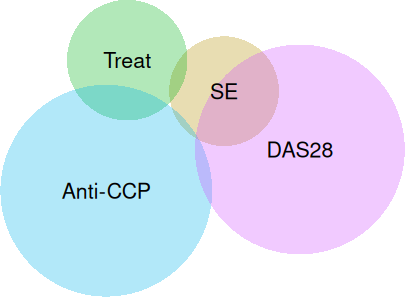
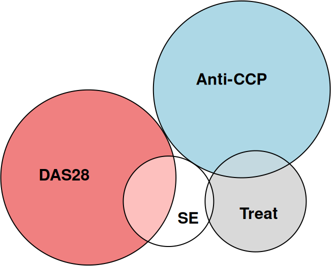

A new package polylabelr can be used find visual centers of polygons and label Euler diagrams.
Author
Johan Larsson
Published
29 October 2018
Labeling Euler diagram overlaps
The purpose of my R package eulerr is to fit and visualize Euler diagrams. Besides the various intricacies involved in fitting the diagrams, there are many interesting problems involved in their visualization. One of these is the labeling of the overlaps.
Naturally, simply positioning the labels at the shapes’ centers fails more often than not. Nevertheless, this stategy is employed by venneuler, for instance, and the plots usually demand manual tuning.
# an example set combinations <-c("SE"=13,"Treat"=28,"Anti-CCP"=101,"DAS28"=91,"SE&Treat"=1,"SE&DAS28"=14,"Treat&Anti-CCP"=6,"SE&Anti-CCP&DAS28"=1)library(venneuler, quietly =TRUE)fit_venneuler <-venneuler(s)plot(fit_venneuler)

A plot from venneuler with suboptimal label placements.
Up til now, I solved this in eulerr by, for each overlap, filling one of the involved shapes (circles or ellipses) with points and then numerically optimizing the location of the point using a Nelder–Mead optimizer. However, given that the solution to finding the distance between a point and an ellipse—at least one that is rotated—itself requires a numerical solution (Eberly 2013), this procedure turned out to be quite inefficient.
The promise of polygons
R has powerful functionality for plotting in general, but lacks capabilities for drawing ellipses using curves. High-resolution polygons are thankfully a readily available remedy for this and have since several version back been used also in eulerr.
The upside of using polygons, however, are that they are usually much easier, even if sometimes inefficient, to work with. For instance, they make constructing separate shapes for each overlap a breeze using the polyclip package (Johnson and Baddeley 2018).
And because basically all shapes in digital maps are polygons, there happens to exist a multitude of other useful tools to deal with a wide variety of tasks related to polygons. One of these turned out to be precisely what I needed: polylabel (mapbox2018a?) from the Mapbox suite. Because the details of the library have already been explained elsewhere I will spare you the details, but briefly put it uses quadtree binning to divide the polygon into square bins, pruning away dead-ends. It is inefficient and will, according to the authors, find a point that is “guaranteed to be a global optimum within the given precision”.
Because it appeared to be such a valuable tool for R users, I decided to create a wrapper for the c++ header for polylabel and bundle it as a package for R users.
# install.packages("polylabelr")library(polylabelr)# a concave polygon with a holex <-c(0, 6, 3, 9, 10, 12, 4, 0, NA, 2, 5, 3)y <-c(0, 0, 1, 3, 1, 5, 3, 0, NA, 1, 2, 2)# locate the pole of inaccessibilityp <-poi(x, y, precision =0.01)plot.new()plot.window(range(x, na.rm =TRUE),range(y, na.rm =TRUE),asp =1)polypath(x, y, col ="grey90", rule ="evenodd")points(p, cex =2, pch =16)
To come back around to where we started at, polylabelr has now been employed in the development branch of eulerr where it is used to quickly and appropriately figure out locations for the labels of the diagram.
library(eulerr)plot(euler(s))

An Euler diagram with appropriate label placement.